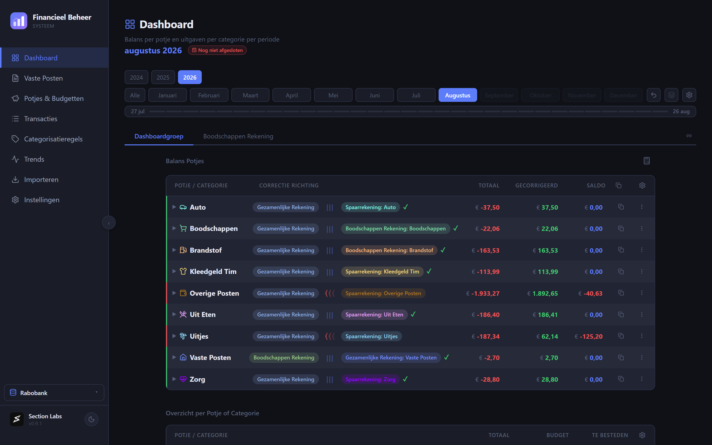
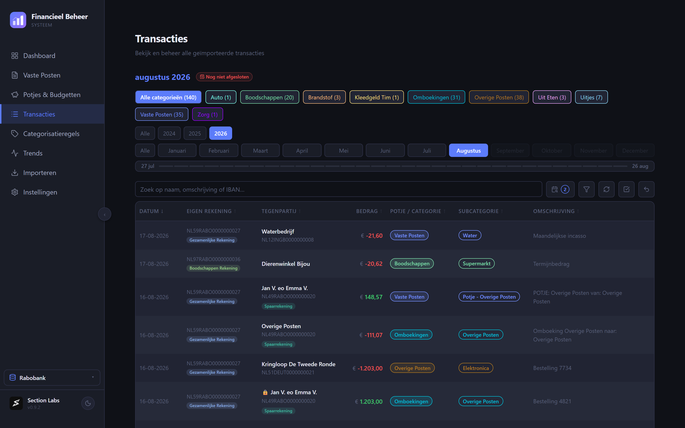
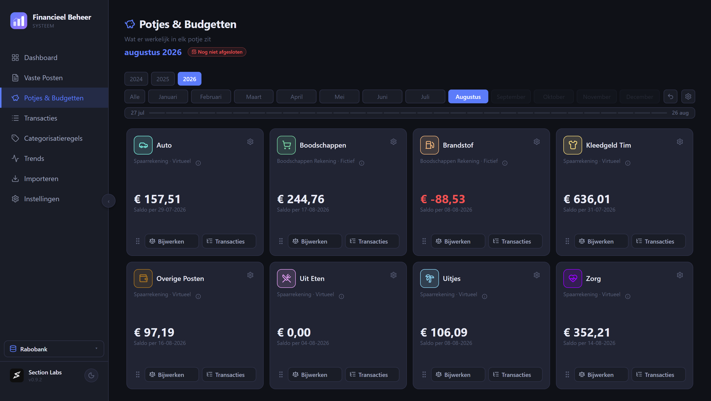
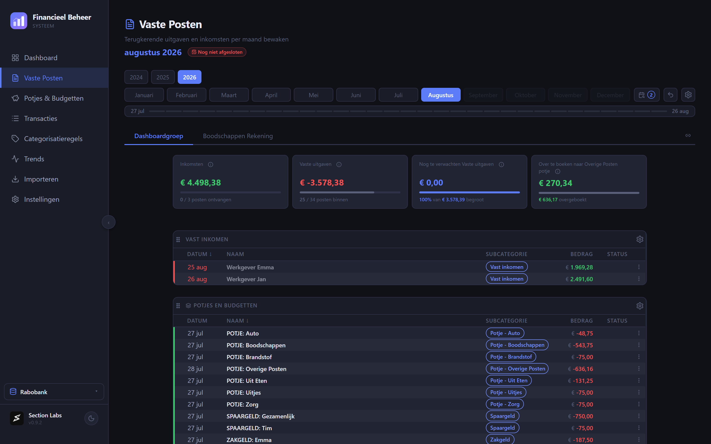

Section Labs
Section LabsGrip op je geld,
zonder spreadsheet-goeroe te worden.
FBS, het Financieel Beheer Systeem, is een Nederlandstalig programma voor je eigen financiën. Je leest de bestanden in die je bij je bank downloadt, en FBS maakt daar een overzicht van. Alles blijft op je eigen computer staan.
Gratis. Geen account nodig.

Je boekingen, ingedeeld
Sleep het bestand van je bank in FBS. Rabobank en ABN AMRO worden herkend, en boekingen die je al had worden overgeslagen.
Elke boeking krijgt een categorie. Dat doe je één keer per winkel of instantie: daarna deelt FBS de volgende keer zelf in.

Potjes die kloppen met de werkelijkheid
Zet geld opzij voor de auto, de boodschappen of een uitje, op een spaarrekening of alleen op papier. FBS houdt bij wat er werkelijk in zit.
Betaal je iets van de verkeerde rekening, dan laat Balans Potjes zien hoeveel je moet overboeken om het recht te zetten.

Vaste lasten in de gaten
Huur, verzekeringen, abonnementen: FBS weet welke er elke maand horen te komen en laat zien welke nog ontbreken.
Wijkt een bedrag af van vorige maand, dan zie je dat meteen.

Je gegevens blijven bij jou
Geen cloud
Er gaat niets naar een dienst van iemand anders. Je gegevens staan op je eigen computer, en verder nergens.
Geen koppeling met je bank
FBS leest alleen de bestanden die je zelf bij je bank ophaalt. Het logt nergens voor je in.
Zelf back-ups
FBS maakt zelf back-ups op je computer. Een tweede kopie kan naar een map die jij kiest, desgewenst versleuteld met een wachtwoord.
Download FBS
Windows
Windows 10 of 11, 64-bit. Voer het gedownloade installatiebestand uit.
macOS
Voor Intel en Apple Silicon. Open het gedownloade schijfbestand en sleep FBS naar Programma's.
Daarna
Je hoeft niets meer te downloaden. FBS meldt zelf wanneer er een nieuwe versie is en werkt zichzelf bij.
De ontwikkeling van FBS steunen
FBS is gratis. Wil je bijdragen aan de verdere ontwikkeling, dan kan dat met een vrijwillige bijdrage. Je kiest zelf het bedrag.
Je betaalt met iDEAL of een betaalkaart. FBS werkt precies hetzelfde met of zonder bijdrage.